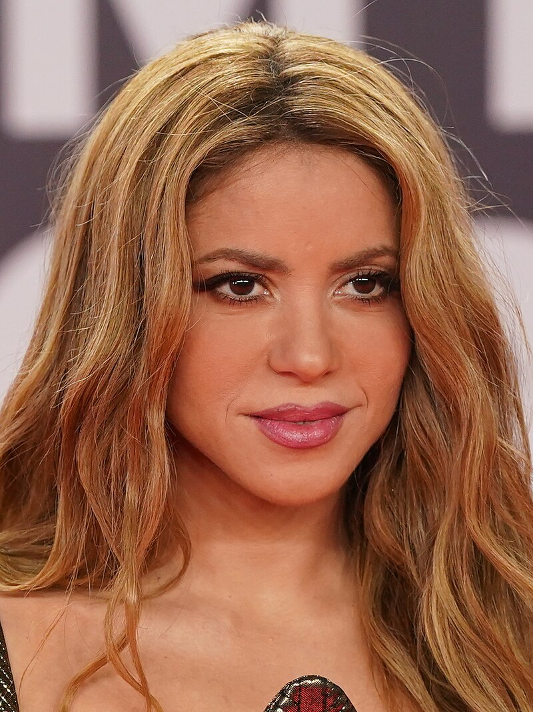

Shakira Isabel Mebarak Ripoll (Barranquilla, Colombia, 1977), de nombre artístico Shakira, es una cantante, compositora, bailarina y productora. Gracias a su potencia y versatilidad vocal, y a unas ventas millonarias que superan los 75 millones en todo el mundo, se la considera como la Reina del pop latino.

Michael Joseph Jackson (Gary, Indiana, 29 de agosto de 1958 – 25 de junio de 2009, conocido en el mundo artístico como Michael Jackson, fue un cantante, compositor y bailarín estadounidense, cuya música incluye una amplia acepción de géneros como el pop, rhythm and blues (soul y funk), rock, disco y dance.

Es que la cantante colombiana es la creadora de la Fundación Pies Descalzos, que brinda educación a miles de niños colombianos y que incluso fundó colegios en todo el país. Estos se encuentran en varias ciudades.